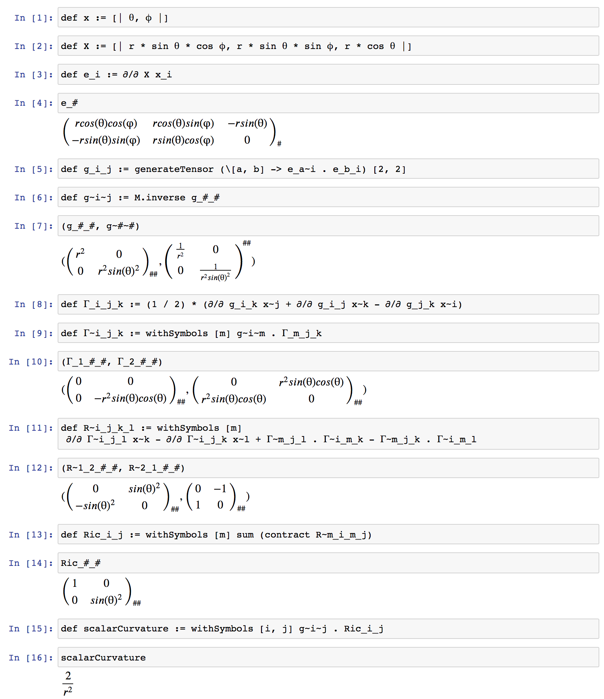
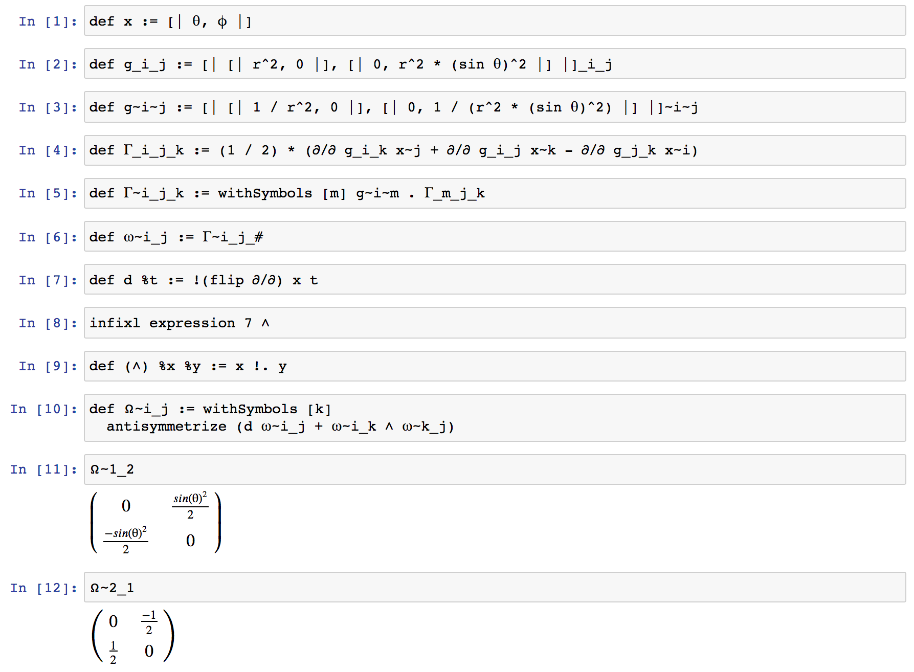

14Differential Geometry with Egison
This chapter introduces the application of Egison to differential geometry as a practical example of Egison as a computer algebra system. Using Egison, one can compute the curvature of various manifolds simply by writing programs that closely resemble the mathematical definitions, and operators for differential forms such as the exterior derivative and the Hodge star operator can be concisely defined as programs. The explanations in this chapter assume the reader has knowledge of differential geometry. For readers interested in differential geometry, we recommend Curves and Surfaces in Differential Geometry by Shoshichi Kobayashi (Shokabo).
14.1Differential Geometry and Egison
Differential geometry is a field where hand computation is particularly laborious. For example, the simplest manifold with nontrivial curvature is the sphere \(S^2\), but computing its Riemann curvature tensor by hand takes about 30 minutes for a first attempt. Subsequently, computing the Riemann curvature tensor of the torus \(T^2\), the next simplest manifold, also takes more than 30 minutes. In actual research, one often computes the curvature of higher-dimensional and more complex manifolds. In such cases, computation may take more than a month. Therefore, differential geometry is also the field where computer algebra systems are most readily applicable.
Using a computer algebra system, the Riemann curvature tensor of \(S^2\) can be computed in seconds by writing the definitions of the spherical coordinate system, the Riemannian metric, the Christoffel symbols, and the Riemann curvature tensor as programs. For \(T^2\), once a program has been written to compute the Riemann curvature tensor of \(S^2\), parts other than the coordinate system setup can be reused, so the computation takes only a few minutes of work. For higher-dimensional and more complex manifolds, one only needs to change the metric setting.
Egison can describe differential geometry computations as programs in a form closer to mathematical notation than conventional computer algebra systems, by combining the differentiation operator described in Section 9.5, the tensor language features described in Chapter 12, and the function symbols described in Chapter 13. Additionally, as mentioned in Section 12.9, Egison also provides a mechanism for concisely defining operators for differential forms such as the exterior derivative and the Hodge star operator. This chapter demonstrates these features and shows how Egison can be useful for research and education in differential geometry.
14.2Computing the Riemann Curvature Tensor
This section explains the Egison programs for computing various differential geometric quantities such as the Riemannian metric, Christoffel symbols, Riemann curvature tensor, Ricci curvature, and scalar curvature for the sphere. Figure 14.2 shows an Egison program computing the Riemann curvature tensor of the sphere on Jupyter Notebook and its output. Various geometric invariants are computed from the curvature. By changing only the metric part of the program explained in this section, one can compute the curvature of any manifold. Therefore, understanding the program in this section enables you to use Egison for actual differential geometry research. This section proceeds by explaining each part of this program in order.

14.2.1Spherical Coordinate System -- [1]-[2]
The spherical coordinate system consists of three parameters: \(r\), \(\theta\), and \(\phi\). \(r\) represents the distance from the origin. \(\theta\) represents the angle from the \(z\)-axis, i.e., the latitude. \(\phi\) represents the rotation from the \(x\)-axis in the \(xy\)-plane, i.e., the longitude. By fixing the value of \(r\) in the spherical coordinate system, one obtains a coordinate system for the sphere. The spherical coordinate system and the Cartesian coordinate system are related by \(x = r \cos \theta \sin \phi, y = r \cos \theta \cos \phi, z = r \sin \theta\). This is the content expressed in [1] and [2] of Figure 14.2.
14.2.2Tangent Vectors and Riemannian Metric -- [3]-[7]
First, the basis vectors of the tangent space at each point on the sphere determined by \(\theta\) and \(\phi\) are computed. In [3], these vectors are computed, and in [4], they are displayed. The first and second rows of the output of [4] are the components of the basis vectors.
The Riemannian metric can be expressed as a matrix that contains information about the magnitude and direction of tangent vectors at each point. In [5], the magnitudes of the basis vectors are computed by calculating the inner product of the vectors. In [6], the values of the Riemannian metric defined in [5] are displayed. In the spherical coordinate system, the magnitudes of the basis vectors naturally determined by the coordinates differ at each point. For example, the magnitude of the basis vector in the longitude (\(\phi\)) direction changes depending on the latitude (\(\theta\)). This information appears in the \(2,2\) component of g_i_j as \(r^2 \sin^2 \theta\).
In [7], the Riemannian metric with superscript indices is obtained using the matrix inversion function M.inverse. There are two types of Riemannian metric: \(g_{ij}\) with subscript indices and \(g^{ij}\) with superscript indices.
14.2.3Christoffel Symbols and Riemann Curvature Tensor -- [8]-[12]
[8] and [9] express the mathematical definitions of the Christoffel symbols of the first kind and second kind as programs. They are expressed as programs in a form very close to the mathematical formulas. Intuitively, the Christoffel symbol \(\Gamma^{i}_{\;jk}\) represents the degree of change in the \(e_i\) direction when the basis vector \(e_j\) is moved in the \(e_k\) direction.
The Riemann curvature tensor can also be written as a program directly from its mathematical definition, as shown in [11]. Intuitively, the Riemann curvature tensor \(R^{i}_{\;jkl}\) represents the degree of change in the \(e_i\) direction when \(e_j\) is moved along the closed path formed by \(e_k\) and \(e_l\).
14.2.4Ricci Curvature and Scalar Curvature -- [13]-[16]
[13]-[14] compute the Ricci curvature, and [15]-[16] compute the scalar curvature. They correspond to the following mathematical formulas.
14.2.5Changing the Metric
By changing only the metric part of the program explained in this section, one can compute the Christoffel symbols and Riemann curvature tensor of various manifolds.
For example, to compute the Riemann curvature tensor of the torus \(T^2\), one only needs to change the spherical coordinate system to the coordinate system of the torus. The coordinate system for the torus can be set up as in [1]-[2] of Figure 14.2.5. Backquotes (“`”) are used in this expression. As explained in Section 10.2, expressions with backquotes are treated by the Egison interpreter as if they were a single symbol. Here, by appropriately inserting backquotes, the computation process and the final results become simpler.

Furthermore, by changing the metric to the Schwarzschild metric defined below, one can perform general relativity calculations for a universe with a single massive celestial body at the origin. This computation result represents “spacetime curvature = gravity.”
declare symbol G, M, c, t, r, `$\theta$`, `$\phi$`
def g_i_j : Tensor MathValue :=
[| [| `(c^2 * r - 2 * G * M) / (c^2 * r), 0, 0, 0 |]
, [| 0, (-1) / (`(c^2 * r - 2 * G * M) / (c^2 * r)), 0, 0 |]
, [| 0, 0, -r^2, 0 |]
, [| 0, 0, 0, -r^2 * (sin `$\theta$`)^2 |]
|]The complete program is available at sample/math/geometry/riemann-curvature-tensor-of-Schwarzschild-metric.egi in the Egison source code.
14.3Computing the Curvature Form -- Computation Using Differential Forms (1)
As mentioned in Sections 12.8, 12.9, and 12.14, Egison's tensor-related features are designed to concisely express computations using differential forms. Differential forms allow tensor operations to be described more abstractly.
This section introduces the computation of the curvature form as an example of differential form computation. The curvature form is a generalization of the Riemann curvature tensor, which can be computed using the formula \(\Omega^{i}_{\;j} = d \omega^{i}_{\;j} + \omega^{i}_{\;k} \wedge \omega^{k}_{\;j}\), a more concise formula than that of the Riemann curvature tensor. The \(\omega\) appearing in the above formula is called the connection form and corresponds to the Christoffel symbols of the second kind in the context of differential forms.

14.3.1Wedge Product and Curvature Form
Figure 14.3 shows an Egison program that computes the curvature form of \(S^2\). [1]-[5] set up the parameters of the spherical coordinate system, the Riemannian metric, and the Christoffel symbols. [6] defines the connection form \(\omega\) using the Christoffel symbols of the second kind. [7] defines the exterior derivative operator. [8]-[9] define the wedge product. The wedge product is defined as an infix operator. [10]-[12] compute and output the curvature form.
14.3.2Euler Form and Euler Number
The Euler class is a well-known characteristic class: it is a characteristic class that yields the Euler number when integrated. The following program computes the Euler form of the torus \(T^2\).
def eulerForm : Tensor MathValue :=
(1 / (4 * `$\pi$`)) * withSymbols [t1, t2]
(`$\Omega$`~1_2_t1_t2 - `$\Omega$`~2_1_t1_t2)
eulerForm
-- [| [| 0, (1 / 2) * ('cos `$\theta$`) * `$\pi$`^-1 |],
-- [| (-1 / 2) * ('cos `$\theta$`) * `$\pi$`^-1, 0 |] |]Here, \(\Omega\) is the curvature form antisymmetrized over its indices. The complete program is available at sample/math/geometry/euler-form-of-T2.egi in the Egison source code.
Since Egison does not have an integration function, we record the result of integrating this by hand. Integration yields \(0\), which is the Euler number of \(T^2\).
14.4Computing the Hodge Laplacian -- Computation Using Differential Forms (2)
This section introduces another example of programming computations using differential forms.
Figure 14.4 shows an Egison program and its output that computes the Laplacian in polar coordinates using the Hodge Laplacian formula \(\Delta = d \delta + \delta d\). The first half of this section explains this program.

14.4.1Exterior Derivative and Hodge Star Operator
The first part of Figure 14.4, [1]-[4], sets up the parameters and metric of the polar coordinate system. Then, the basic operators for differential forms -- the exterior derivative, the Hodge star operator, and the adjoint of the exterior derivative -- are defined in [5]-[8]. The definition of the Hodge star operator in [6] uses the following formula. The subrefs used in this definition is a built-in function that sequentially attaches the symbols in the second argument list as subscript indices to the tensor given as the first argument.
14.4.2Hodge Laplacian
Using differential forms, the Laplacian can be defined coordinate-independently as \(\Delta = d \delta + \delta d\). The Laplacian expressed using this formula is called the Hodge Laplacian. This formula is expressed in Egison in [8]. In the definition of [8], the cases of 0-forms and 2-forms are treated specially. This is because, strictly speaking, \(d\) is undefined for 2-forms in a 2-dimensional coordinate system, and \(\delta\) is undefined for 0-forms.
In [9], the function symbol is defined, and in [10], the Hodge Laplacian is applied to it. As with the Riemann curvature tensor explained in Section 14.2, the Laplacian for various coordinate systems can be computed by simply changing the metric.
14.5Other Differential Form Operators -- Interior Product and Lie Derivative
We briefly introduce that the interior product and Lie derivative can also be concisely defined in Egison. These operators are used, for example, in expressing the law of conservation of mass in fluid dynamics and the Navier-Stokes equations using differential forms. The interior product is defined in the library (lib/math/geometry/differential-form.egi) as follows. DiffForm a is a built-in type representing differential forms.
def `$\iota$` {Field a} (X: DiffForm a) (Y: DiffForm a) : DiffForm a :=
withSymbols [i] dfOrder Y * (X...~i . dfNormalize Y..._i)The Lie derivative can be defined as follows (N is the dimension of the manifold).
def Lie {Field a} (X: DiffForm a) (Y: DiffForm a) : DiffForm a :=
match dfOrder Y as integer with
| #0 -> `$\iota$` X (d Y)
| #N -> d (`$\iota$` X Y)
| _ -> `$\iota$` X (d Y) + d (`$\iota$` X Y)